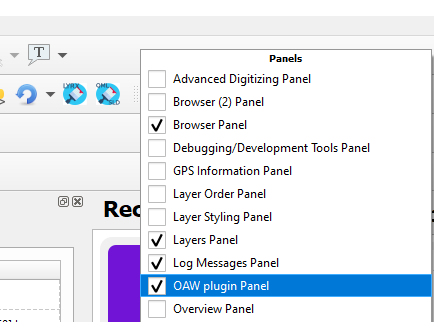
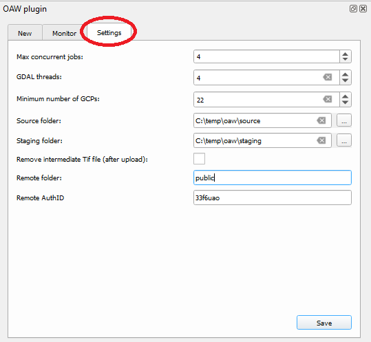
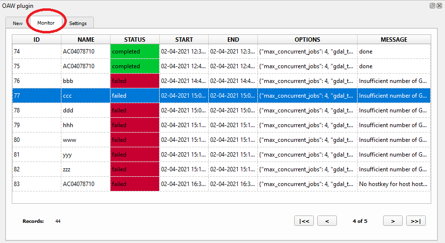
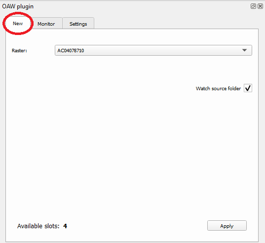
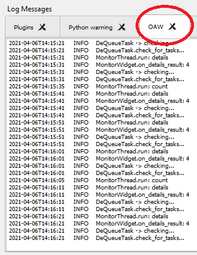

Description
This plugin allow the user to pre-process raster images (Tif format) before to upload them in the server
to be scheduled for the final step of publish them on GeoNode/GeoServer.
The plugin optimize a raster (*.tif) with GCP information (*.tif.points) using GDAL tools.
The optimization steps are the following:
- Add GCP information to the raster
- Warp the image
- Separate the 3 bands of the image
- Create the binary mask
- Recombine the 3 bands with the mask
- Add JPEG compression
- Add overviews to the image
Panel
To show/hide the UI panel of this plugin we have to right click on the toolbars' area of QGIS and then select/deleselct the "OAW plugin panel" item.

Settings
The panel of the plugin contains a specific area where the user can specify some parameters for the plugin:

The configurable parameters are:
- Max concurrent jobs: maximum number of concurrent tasks to be processed by the system
- GDAL threads: number of threads to be used with some GDAL commands
- Minimum number of GCPs: minimum number of GCP to be used for the georectify/optimization process.
If the raster has less then this value the process will fail for this reason.
- Source folder: it is the path of the folder containing the raster to be processed (*.tif + *.tif.points)
- Staging folder: it is the path where the system move original files (*.tif + *.tif.points)
when the task is marked as "reserved" and it is going to be started by the system.
In this path the process will put also temporary files.
- Remove intermediate file (after upload): at the end of the optimization process (in the staging folder)
for a specific raster we will have 3 files:
- original tif
- original tif.points
- optimized tif (GeoTif)
The system after sent the optimized tif to the server (via SFTP) can remove automatically the optimized tif if required.
Monitor
The panel of the plugin contains a specific area where the user can monitor the processing of the scheduled images:

The main table in the monitor page has the following fields:
- ID: identifier of the task
- NAME: name of the raster (it should be the BIBID)
- STATUS: status of the task.
The available status for a process are:
- Waiting: the task is queued and it is waiting to be processed by the system
- Reserved: the executor system promote the task to be executed in few moments
- Running: the task is currently processed by the system
- Failed: the task is stopped cause an error (we can read the details of the problem in the message field)
- Completed: the task is completed correctly
- START: date/time when the task was started by the system
- END: date/time when the task was completed/stopped by the system
- OPTIONS: it contains the information of the settings at the time of the task was queued
- MESSAGE: it contains information about the processing. Generally useful in case of failed task
At the bottom of the monito page we have:
- on the LEFT side: the number of total tasks
- on the RIGHT side: the pagination buttons
New
The panel of the plugin contains a specific area where the user schedule a new raster to the system:

In the "drop-down" menu the user can select available raster to be processed by the system.
The system add rasters in this menu looking in the source folder path for tif images with the relative GCP file (tif.points).
The "watch source folder" flag asks the system to continously monitor changes in this folder (for new/deleted/renamed files) and update the drop-down menu list.
If this option is not enabled the list is filled just when the QGIS application starts.
The apply button add the selected raster in the queue of the system.
The "available slots" label informs the user about the number of tasks that the system can start in that specific moment.
Logging
The plugin logs information messages in its own tab in the Log Messages area of QGIS.
To display this area it is necessary to activate it (Log Messages) from the panels menu
(follow the same instructions provided to activate the OAW panel).
The OAW tab shows detailed information about what the plugin is doing:
